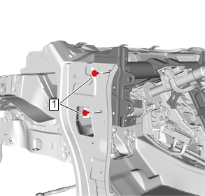
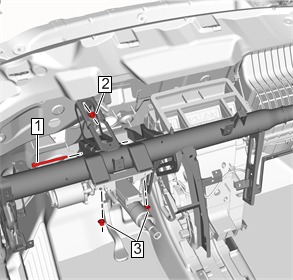
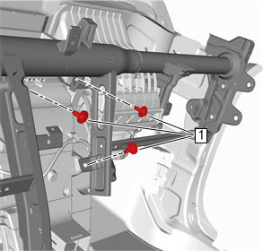
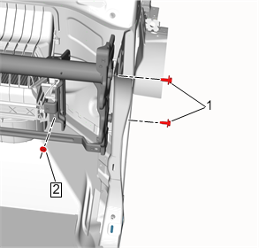
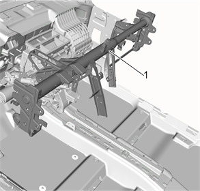

仪表板横梁的更换
拆卸程序
- 1.仪表板总成»拆卸—仪表板总成的更换
- 2.车身控制模块»拆卸—车身控制模块的更换
- 3.串行数据网关模块»拆卸—串行数据网关模块的更换
- 4.拆下仪表板线束并标记仪表板电器线束总成的位置和布线，以确保正确重新安装。
- 5.断开将仪表板电器线束总成固定至仪表板横梁的固定件并放到一边。
- 6.仪表板横梁托架»拆卸—仪表板横梁托架的更换
-

7.打开左侧车门并拆下仪表板横梁左侧螺栓（1）。
-

8.拆下仪表板横梁总成固定至转向柱的螺栓（1）和螺母（3）。
- 9.拆下仪表板横梁总成前螺母（2）。
-

10.拆下仪表板横梁总成固定至加热器、空调蒸发器和鼓风机模块的螺栓（1）。
-

11.打开右侧车门并拆下仪表板横梁右侧螺栓（1）。
- 12.拆下仪表板横梁总成固定至加热器、空调蒸发器和鼓风机模块的螺母（2）。
-

13.拆下仪表板横梁总成（1）。
安装程序
-
1.将仪表板横梁总成（1）固定至车辆。
-
2.安装车身右侧仪表板横梁固定至车身的2个螺栓（1）并紧固至22 N•m( 16 lb ft) 。
- 3.安装仪表板横梁总成固定至加热器、空调蒸发器和鼓风机模块的螺母（2）并紧固至22 N•m( 16 lb ft) 。
-
4.安装3个仪表板横梁总成固定至加热器、空调蒸发器和鼓风机模块的螺栓（1）并紧固至22 N•m( 16 lb ft) 。
-
5.安装仪表板横梁总成固定至转向柱的螺栓（1）并紧固至22 N•m( 16 lb ft) ，安装2个仪表板横梁总成固定至转向柱的螺母（3）并紧固至22 N•m( 16 lb ft) 。
- 6.安装仪表板横梁总成前螺母（2）并紧固至22 N•m( 16 lb ft) 。
-
7.安装车身左侧仪表板横梁固定至车身的2个螺栓（1）并紧固至22 N•m( 16 lb ft) 。
- 8.仪表板横梁托架»安装—仪表板横梁托架的更换
- 9.将仪表板线束重新定位至拆卸过程中标记的车辆位置，并连接将仪表板电器线束总成固定至仪表板横梁的紧固件。
- 10.串行数据网关模块»安装—串行数据网关模块的更换
- 11.车身控制模块»安装—车身控制模块的更换
- 12.仪表板总成»安装—仪表板总成的更换